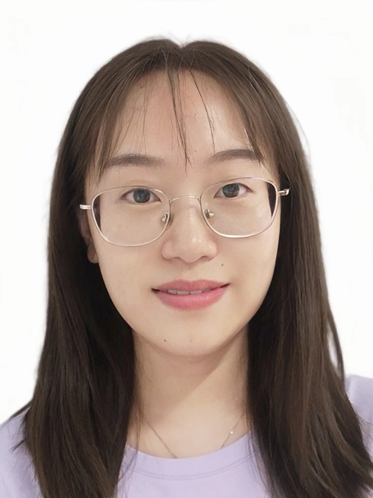

<style>
    body {
        font-size: 18px;
    }

    .container {
        display: flex;
    }

    .left-column {
        width: 30%;
        text-align: center;
        margin-right: 20px;
    }

    .right-column {
        width: 88%;
    }

    .profile-photo {
        width: 75%;
        object-fit: cover;
        border-radius: 10px;
    }

    .contact-info p {
        font-size: 18px;
        margin: 5px 0;
    }

    .contact-info a {
        word-break: break-all; /* 强制长单词或链接在任意位置换行 */
        word-wrap: break-word;
        overflow-wrap: break-word;
    }

    .bibliography p {
        font-size: 18px;
        margin: 10px 0;
        text-align: justify;
    }

    .bibliography ul {
        font-size: 18px;
        margin: 10px 0;
    }

    a {
      color: #a32133;
    }

    h5 {
      font-weight: 700;
    }
</style>

<section>
    <div class="container mt-2 mb-2">
        <div class="left-column">
            <!-- Personal Information Section -->
            
            <div class="contact-info">
                <h4><strong>Yuhong Song</strong></h4>
                <p>Assistant Researcher, Pengcheng National Laboratory, Shenzhen, China</p>
                <p><a href="mailto:yuhongsong23@gmail.com"><i class="fas fa-envelope"></i> yuhongsong23@gmail.com</a></p>
                <p><a href="https://scholar.google.com/citations?user=zcBo4EQAAAAJ&hl=zh-CN&oi=ao" target="_blank"><i class="fas fa-graduation-cap"></i> Google Scholar</a></p>
            </div>
        </div>

        <div class="right-column">
            <!-- Biography Section -->
          <h2>About Me</h2>
            <div class="bibliography">
              <p>
                I'm currently an Assistant Researcher in the <a href="https://smartinternet.group">Smart Internet Group</a> at <a href="https://www.pcl.ac.cn/">Pengcheng National Laboratory</a>, and I'm a recipient of the 2025 National Youth Talent Program.
                I received my Ph.D. degree from the <a href="">School of Computer Science and Technology</a>, <a href="https://english.ecnu.edu.cn/">East China Normal University</a>, supervised by <a href="https://bdislab.tech/sxm.html">Prof. Edwin Hsing-Mean Sha</a> (Changjiang Scholar, NSFC Distinguished Young Scholar).
              </p>
              <p>
                Recently, my research interests include smart internet, embedded AI, LLM and hardware-software co-design. Specifically, my research focus on AI model training and inference acceleration for smart internet, AI model compression, hardware-software co-design for Embedded AI systems, and network for LLM inference, etc.
                So far, I have published over 20 papers at the international conferences/journals such as DAC, TCAD, ICCAD, ICCD, DATE, ASP-DAC, GLSVLSI, etc.
              </p>
              <p>
                🔥 【招生】招收清华深圳研究生院和鹏城国家实验室联合培养科研实习生 (长期有效)，详情见<a href="./image/ResearchIntern.jpg">海报</a>，欢迎有意愿至清华深研院深造的同学申请！
              </p>
              <h5>Research Areas and Interests</h5>
              <ul>
                <li>Smart Internet</li>
                <li>Embedded AI</li>
                <li>Hardware-Software Co-design</li>
              </ul>
              <h5>Work Experience</h5>
              <ul>
                <li>Sep. 2025 - Present, Assistant Researcher, Pengcheng National Laboratory, Shenzhen</li>
                <li>Sep. 2024 - Aug. 2025, Postdoctoral Researcher, George Mason University, United States
                  <span style="display:block; margin-left:20px; color:gray;"><a href="https://jqub.github.io/">Supervisor: Prof. Weiwen Jiang</a></span>
                </li>
                <li>Mar. 2024 - Aug. 2024, Research Assistant, The Chinese University of Hong Kong, Hong Kong
                  <span style="display:block; margin-left:20px; color:gray;"><a href="http://www.cse.cuhk.edu.hk/~shao/">Supervisor: Prof. Zili Shao</a></span>
                </li>
              </ul>
              <h5>Education</h5>
              <ul>
                <li>Sep. 2019 - Jun. 2024, Master & Ph.D., East China Normal University, Shanghai</li>
                <li>Sep. 2015 - Jun. 2019, Bachelor, Nanjing Agricultural University, Nanjing</li>
              </ul>
            </div>
        </div>
    </div>
</section>
